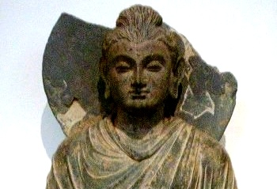

|

|
The JatakaVolume Vtr. H.T. Francised. E. B. Cowell[1905] |
This is volume five of the complete Jataka translation edited by E.B. Cowell. The Jataka is the treasure-house of stories about the Buddha's previous incarnations.
Title Page
Preface
Contents
Additional Notes and Corrections
No. 511.: Kiṁchanda-Jātaka.
No. 512.: Kumbha-Jātaka.
No. 513.: Jayaddisa-Jātaka.
No. 514.: Chaddanta-Jataka.
No. 515.: Sambhava-Jātaka.
No. 516.: Mahākapi-Jātaka.
No. 517.: Dakarakkhasa-Jātaka.
No. 518.: Paṇḍara-Jātaka.
No. 519.: Sambula-Jātaka.
No. 520.: Gaṇḍatindu-Jātaka.
No. 521.: Tesakuṇa-Jātaka.
No. 522.: Sarabhaṅga-Jātaka.
No. 523.: Alambusā-Jātaka.
No. 524.: Saṁkhapāla-Jātaka.
No. 525.: Culla-Sutasoma-Jātaka.
No. 526.: Naḷinikā-Jātaka.
No. 527.: Ummadantī-Jātaka.
No. 528.: Mahābodhi-Jātaka.
No. 529.: Sonaka-Jātaka.
No. 530.: Saṁkicca-Jātaka.
No. 531.: Kusa-Jātaka.
No. 532.: Sona-Nanda-Jātaka.
No. 533.: Cullahaṁsa-Jātaka.
No. 534.: Mahāhaṁsa-Jātaka.
No. 535.: Sudhābhojana-Jātaka.
No. 536.: Kuṇāla-Jātaka.
No. 537.: Mahā-Sutasoma-Jātaka.
Index of Subject Matters